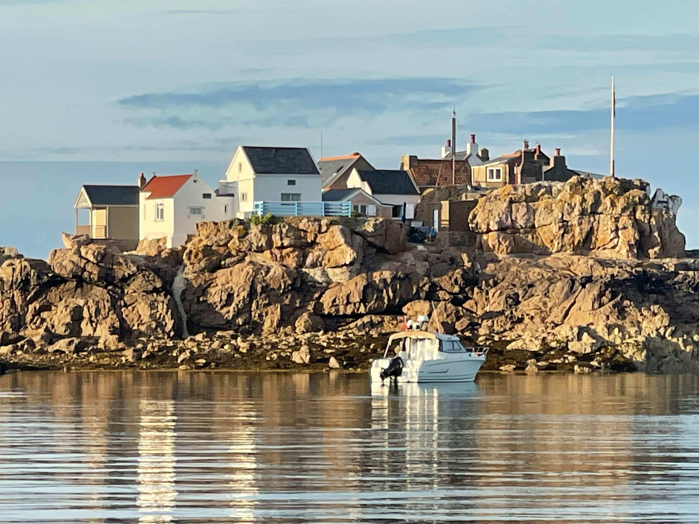
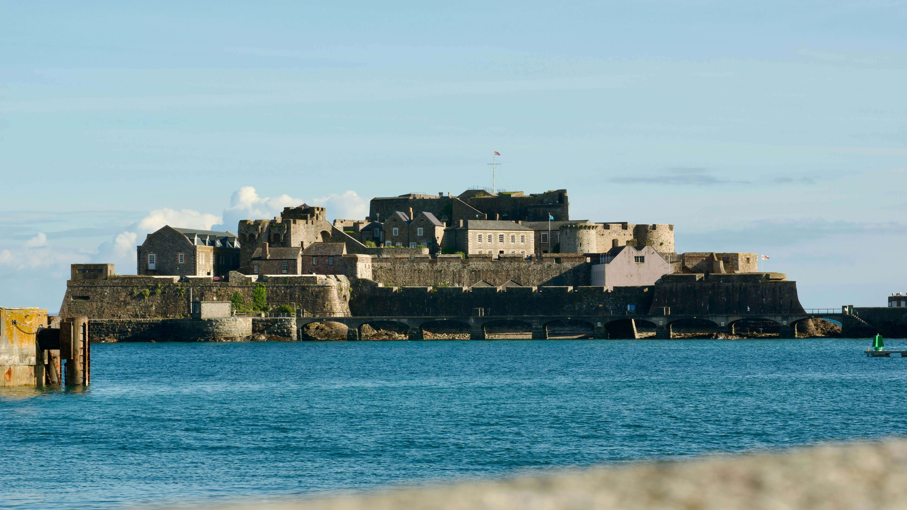
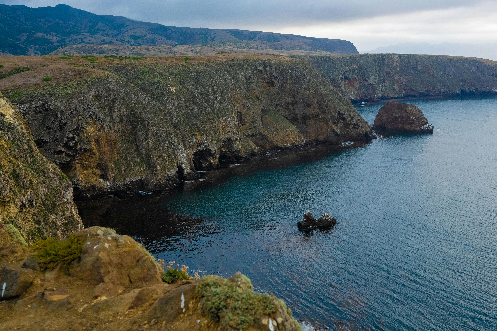
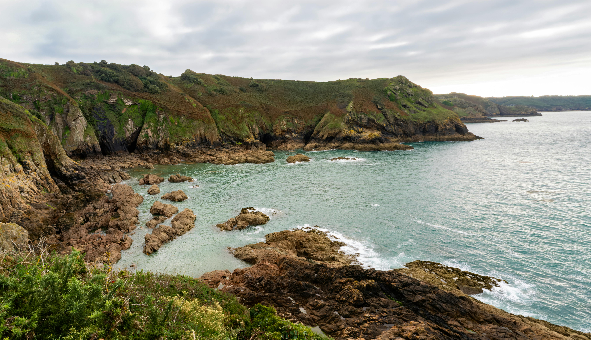

In 2011 Nicola spent a month in Plancoët in northern Brittany — and with St Malo just 20 minutes up the road, the Channel Islands were impossible to resist. One week she took the Condor ferry across to Jersey for the day. The following week she brought the car across to Guernsey with a friend. Two very different islands, both utterly charming, and one of them with roads so narrow you'd lose a wing mirror just thinking about them.


Disclosure: Affiliate link — if you book through it we may earn a small commission at no extra cost to you.
In the summer of 2011 Nicola spent a month in Plancoët — a beautiful little town in the Côtes-d'Armor in northern Brittany, about 20km from St Malo. It is the kind of place that makes you understand why people fall in love with France — good food, friendly locals, long summer evenings and the sea never far away.
From St Malo, Condor Ferries runs fast ferries to both Jersey and Guernsey — the crossings take around an hour — and with the islands sitting just off the Normandy and Brittany coast, they felt like an unmissable addition to the summer. Jersey went first as a solo day trip on foot. Then Guernsey the following week, with a friend and the car loaded onto the ferry for a more thorough exploration.
They turned out to be two of the most pleasant and surprising day trips of the whole summer.
Jersey is technically British — a Crown dependency that answers to the Crown but not to Westminster — but standing in St Helier harbour you'd be forgiven for thinking you were still in France. The street signs are bilingual, the architecture has a distinctly Norman flavour, the produce is unmistakably French in its quality and the whole island has that easy, unhurried character that Brittany and Normandy do so well.
It is also, simply, very beautiful. The coastline is spectacular, the countryside is lush and green, and St Helier is one of those harbour towns where you immediately want to find a table outside and order whatever the sea brought in that morning.
One of the most impressive medieval castles in the British Isles — perched dramatically on a rocky headland above the pretty fishing village of Gorey. The views from the top over the coast of Normandy are extraordinary. A genuinely impressive site that dates back to the 13th century.
The heart of Jersey — a beautiful working harbour surrounded by the mix of French and English architecture that gives the island its unique character. The marina, the market, the old streets running up from the waterfront — St Helier is a genuinely lovely town to spend a few hours exploring.
A Neolithic passage tomb dating back 6,000 years — one of the best preserved prehistoric monuments in Europe. The mound is remarkable, the underground passage is extraordinary and the museum on site puts it all brilliantly in context.
Jersey's seafood is outstanding — the island's position in the rich waters of the English Channel means the lobster, crab, oysters and fish are as fresh as it gets. Do not leave without eating at the harbour. Jersey Royal potatoes and Jersey cream on the side, naturally.
Jersey has a genuinely unique cultural identity — Norman French roots, centuries of English influence and a Crown dependency status that makes it neither fully one nor the other. The bilingual signs, the architecture and the food all reflect a place that has quietly created its own identity on its own terms.
Jersey's coastline is spectacular — dramatic headlands, beautiful bays and some of the finest beaches in the Channel Islands. St Brelade's Bay and St Ouen's Bay are particularly stunning. The island is small enough to see a great deal in a day.
Disclosure: Affiliate link — if you book through it we may earn a small commission at no extra cost to you.
The following week, Nicola and a friend loaded the car onto the ferry at St Malo and crossed to Guernsey — a slightly longer and more involved trip than the Jersey day trip, but one that opened up the island in a way a foot passenger visit simply couldn't.
Where Jersey charmed with its beauty and its unique Anglo-French character, Guernsey fascinated with its history. The German Occupation of the Channel Islands from 1940 to 1945 — the only British territory occupied during World War II — left an extraordinary and sobering mark on Guernsey, and the island has done a remarkable job of preserving and presenting that history.
One of the most extensive German fortifications in the Channel Islands — a network of tunnels built by forced labourers during the Occupation. Walking through the underground wards, operating theatres and corridors is a deeply sobering and historically important experience. Essential if you visit Guernsey.
An extraordinary collection of artefacts, photographs and records from the five-year German Occupation of Guernsey. The museum tells the story of how the islanders lived — and survived — under occupation, with a human detail and honesty that makes it genuinely moving.
Guernsey's capital is a lovely harbour town — step streets running up from the waterfront, colourful Georgian townhouses, Castle Cornet guarding the approach to the harbour and a genuine sense of a place that knows exactly what it is and is very comfortable with it.
Get to the cliff edge and Guernsey absolutely rewards the effort. The south coast in particular has spectacular coastal scenery — dramatic cliffs dropping to turquoise water below, wildflowers on the headlands and views that stretch to the other Channel Islands on a clear day.
A word of honest warning — Guernsey's country lanes are genuinely, magnificently narrow. Hedge-lined, single-track, no room for error. Nicola brought her car over and can confirm they are absolutely shocking. Take it slowly, pull in whenever you can and remember the views at the end are worth every white-knuckle moment.
The great French author spent 15 years in exile in Guernsey and wrote Les Misérables here. Hauteville House in St Peter Port — where he lived and worked — is open to visitors and is a fascinating window into the life of one of literature's giants.


If you are based in northern Brittany — Plancoët, Dinan, St Malo itself — the ferry to the Channel Islands is the most convenient and enjoyable way to visit. Condor Ferries operates fast ferry services from St Malo to both Jersey (St Helier) and Guernsey (St Peter Port), with crossings taking around one hour.
St Malo is one of the great Channel ports — worth exploring in its own right, with its dramatic walled old town, beautiful beaches and strong maritime history. A morning crossing from St Malo to Jersey or Guernsey gives you a full day on the island before returning in the evening — an excellent day trip from almost anywhere in northern Brittany.
If you want to take your car over to Guernsey (which Nicola would recommend — the island is larger and more rewarding with your own transport, terrifying lanes notwithstanding), you simply drive onto the car ferry at St Malo. Book in advance, especially in summer.
St Malo to Jersey: approximately 1 hour 15 minutes on the fast ferry. St Malo to Guernsey: approximately 2 hours. Check Condor Ferries for current schedules.
Car ferries run from St Malo to both islands. For Guernsey especially, having your car gives you the freedom to explore beyond St Peter Port — including those cliff roads. Book well in advance in summer.
The Channel Islands are British Crown dependencies — not EU territory. Irish citizens need a passport to visit. French citizens are an exception but all other nationalities should carry a valid passport.
Mont Orgueil Castle tours, Jersey coastline experiences, Guernsey WWII tours, St Peter Port walking tours and more:
Disclosure: If you book through these links we may earn a small commission at no extra cost to you.
Common questions
What to pack for the Channel Islands
The Channel Islands are best in summer but the sea breeze can be cool — especially on the cliffs and the ferry crossing. A few essentials to pack.
Even in summer the cliff walks and the ferry crossing can be breezy. A light windproof layer is always worth having.
View on Amazon →Both islands reward walking — the coastal paths, the old towns and the castle grounds all need good footwear.
View on Amazon →Long days out exploring and photographing the coastline will drain your battery — keep a power bank charged.
View on Amazon →The Channel Islands are not part of the EU — Irish citizens need a valid passport to visit. Don't forget it.
Travel wallet on Amazon →Disclosure: These are Amazon affiliate links. If you buy through them we may earn a small commission at no extra cost to you.
Whether you go as a day trip from St Malo or stay a few nights, Jersey and Guernsey are two of the most rewarding short breaks in the British Isles. Different islands, different personalities, both absolutely worth it.
Affiliate disclosure: if you book through our links we may earn a small commission at no cost to you.